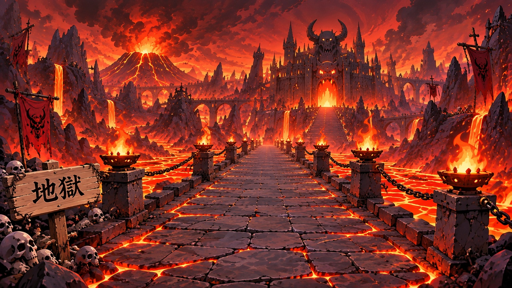

STAGE 1 第1問 / 11問20秒
親子の称号ひよっこ
次の称号まであと2点

問題箇所をさがして問題箇所をタップして印をつけよう

問題箇所をさがしてQUIZ COMPLETE
最終スコア 0点
親子の称号: ひよっこ
シンクロボーナスは親子に1.5点ずつ配分（棒は全ステージ共通目盛り）
FINAL STAGE / ANSWER CHECK
緑: 発見 赤: 見逃し
第1ステージ・第1問
+1点